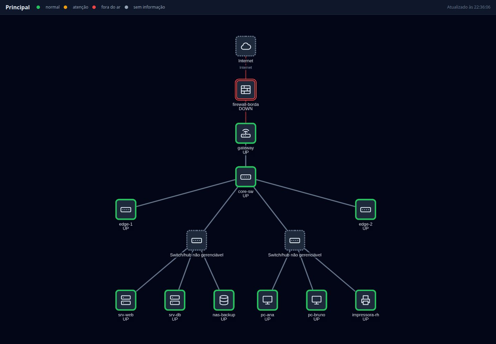
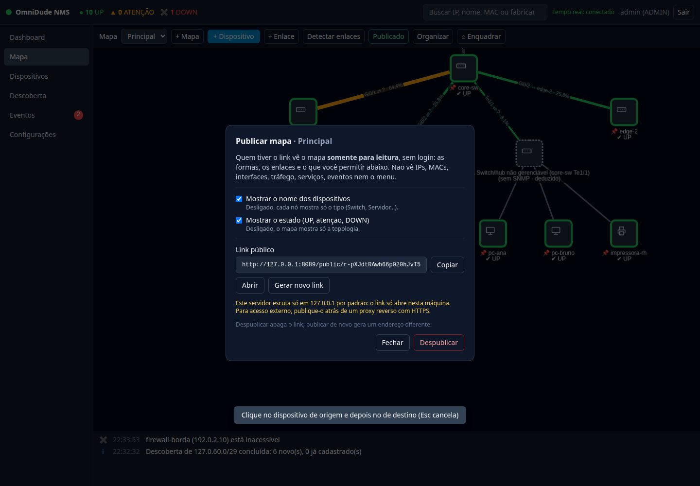

O que é#
Publicar, na barra do mapa ADMIN, gera um link como /public/<token>. Quem abrir esse link, sem login, vê o mapa numa página própria: só as formas, os enlaces e, conforme as opções, os nomes e o estado. Nada de menu, inspetor, Dashboard ou eventos, e nenhum dispositivo é clicável.


Publicar#
- Abra o mapa e clique em Publicar.
- Escolha as opções: mostrar os nomes e mostrar o estado.
- Copie o link (Copiar) ou abra-o (Abrir).


| Opção | Desligada |
|---|---|
| Mostrar o nome dos dispositivos | Cada nó mostra só o tipo (Switch, Servidor…). |
| Mostrar o estado (UP, atenção, DOWN) | O mapa mostra só a topologia. |
- Gerar novo link troca o endereço: o antigo deixa de funcionar e nunca volta.
- Despublicar apaga o endereço.
O que sai e o que não sai#
A visão pública é montada no servidor com uma lista fixa de campos. Não é a interface normal com coisas escondidas: os dados sensíveis não existem na resposta.
Sai
Id público (n0, n1…), nome (se permitido), tipo, estado (se permitido), posição, se é nó lógico; nos enlaces: origem, destino, tipo e “com falha”.
Nunca sai
IPs, MACs, fabricante, interfaces, tráfego, serviços, notas, rótulos, evidências, ids internos e sugestões de enlace. Nós deduzidos aparecem como “Switch/hub não gerenciável”, sem o nome do equipamento nem da porta.
Segurança do link#
- O link é a credencial: 256 bits aleatórios, sem enumeração. Um token inexistente, malformado ou despublicado dá o mesmo 404.
- Só ADMIN vê ou muda a publicação.
- Só
GET, sem cookies nem sessão;Cache-Control: no-store,X-Robots-Tag: noindex,Referrer-Policy: no-referrere uma CSP restrita. - Limite de 120 requisições por minuto por origem.
- O resto do aplicativo (inclusive o SSE e os arquivos da interface) continua exigindo login. A página não pode ser embutida em
iframe. - A página atualiza sozinha a cada 30 s.
Quem tiver o link vê o mapa, e o link pode ser repassado. Se suspeitar de vazamento, use Gerar novo link ou Despublicar.
Disponibilizar para a Internet#
O OmniDude escuta só em 127.0.0.1 por padrão, então o link só abre na própria máquina. Para publicar fora, ponha um proxy reverso com HTTPS na frente e exponha apenas /public/ e /api/public/; o resto não precisa sair.
location /public/ { proxy_pass http://127.0.0.1:8080; }
location /api/public/ { proxy_pass http://127.0.0.1:8080; }
# nenhuma outra rota é expostaAtrás do proxy, o limite de taxa enxerga o IP do proxy, a menos que você configure OMNIDUDE_FORWARD_HEADERS=native (veja Segurança).